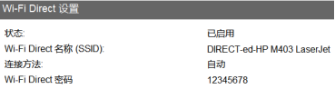
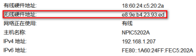
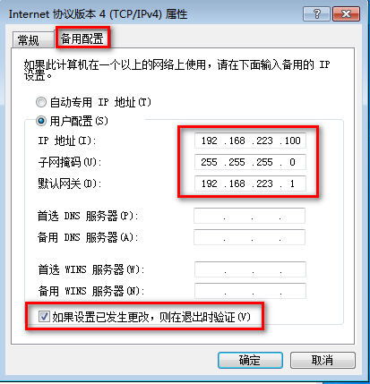
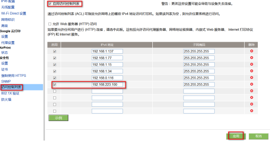

Knowledge Collection
sphinx+reST
Sphinx + reST + github + ReadtheDocs编写文档
reST基础语法
读书笔记
1. 将本地项目上传到Github
2. github 网址加速访问方法
3. Excel年度日程安排表设计方法
4. 压力单位换算表
5. 管路直径不同名称
6. 网页设计中常用的12中颜色
7. hex文件解析
8. 电容电感基础
9. 保护工作表中公式不被修改
10. gdb调试指南
11. Notepad常用设置
12. 《调试九法：软硬件错误的排除之道》
13. 《中兴通讯-信号完整性》
14. Typora基本教程
C语言基础
ASCII编码对照表
C语言中位运算
32位数据位操作基本方式
基本数据类型
指针
常见单词缩写表
printf总结
产品开发
产品文档体系
keil使用报错及技巧集锦
vscode使用过程中错误解决方案
STC单片机纯软件实现程序自动下载功能操作指南
STC单片机自动下载程序的三种方式
USB一键下载单片机程序
RS232/USB/TTL电平相互转换
电脑疑难杂症
Windows变量路径与通配符
Windows bat批处理命令
HP打印机无线网络设置及使用
Windows通过网线局域网共享文件
Office打开超链接时显示组织策略阻止
环境监测与技术
烟尘采样嘴的选择
不同条件对活性炭吸附VOC的影响
Knowledge Collection
»
HP打印机无线网络设置及使用
HP打印机无线网络设置及使用
¶
1.首先电脑连接上HP打印机WIFI。
¶

2.然后安装HP驱动，选择无线硬件地址一步步安装下去。
¶

3.进入无线网络IPV4属性使用静态IP地址。
¶

4.进入软件HP设备工具箱中，输入上面的IP地址,以允许电脑访问打印机。
¶
